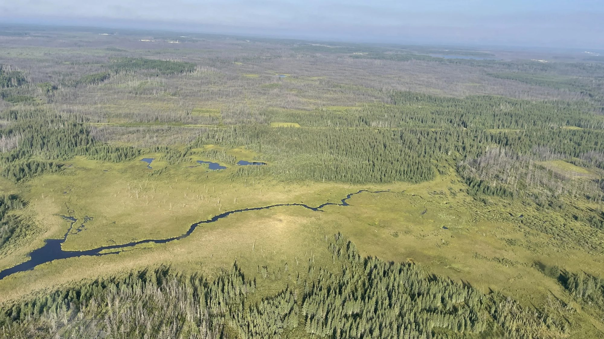
Relier le savoir à la pratique
Nous transformons une science complexe en visuels, en ateliers et en rapports en langage clair, dont les gens peuvent se servir pour agir.
Différentes façons de mettre la science en pratique
D'une seule figure à une stratégie complète, nous construisons chaque projet autour de votre enjeu. Découvrez ce que nous faisons, ou parlez-nous de votre projet.
-
Infographies et communication scientifique
La science complexe rendue visible : figures, infographies, notes d'information, zines, cartes narratives.
Découvrir → -
Synthèse des connaissances
Des données probantes dispersées, réunies dans un document qui éclaire la décision.
Découvrir → -
Conseil stratégique
Des structures, des plans et des feuilles de route, bâtis avec les personnes qui s'en serviront.
Découvrir → -
Ateliers et animation
Des séances en direct, en personne ou en ligne, qui font avancer une conversation vers un résultat.
Découvrir → -
Éducation et vulgarisation scientifique
Des programmes et du matériel qui portent la science vers un public plus large.
Découvrir →

La science, rendue vivante
Nous synthétisons la recherche, la traduisons en infographies et concevons des ressources d'éducation et de vulgarisation que les gens comprennent et retiennent. Nous animons aussi des rencontres et planifions avec nos partenaires, pour que le savoir prenne vie là où se prennent les décisions.
Nos valeurs
- InfluenceDes approches créatives et une exécution claire, pour que la science oriente les décisions qui comptent.
- ExcellenceUne grande exigence dans tout ce que nous faisons, d'une seule figure à un atelier complet.
- CroissanceNous continuons d'apprendre, sur les plans personnel et professionnel, pour renforcer notre impact.
- LienUne équipe inclusive, où la diversité des parcours renforce notre travail et nos relations.
Projet à la une
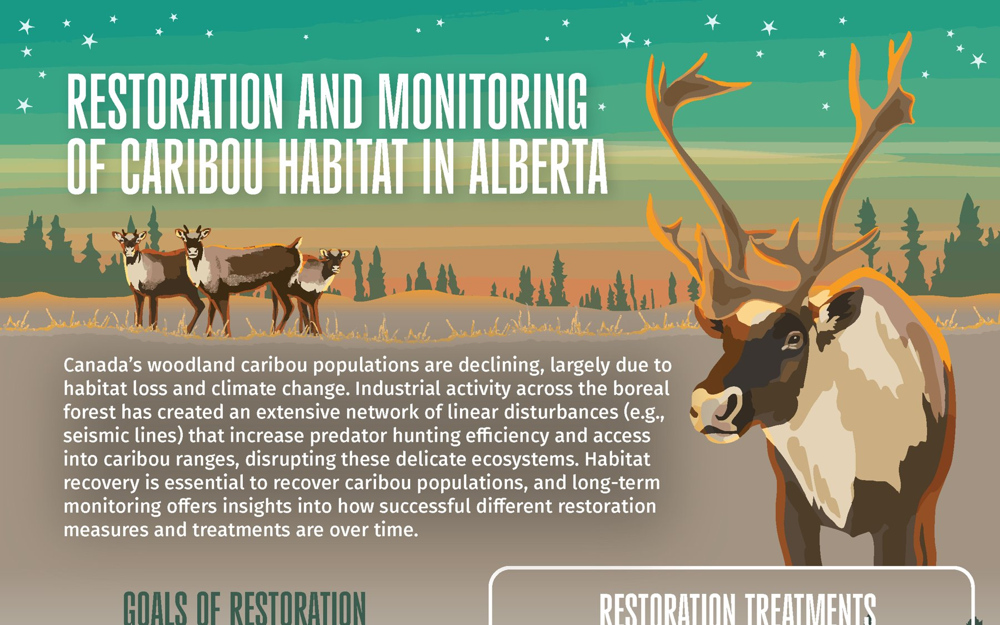
Un vaste programme de recherche, rendu lisible sur une page
- 1Le problèmeDes années de recherche sur la restauration des lignes sismiques, dispersées dans des rapports que peu de praticiens avaient le temps de lire.
- 2Ce que nous avons faitNous avons condensé les objectifs, les traitements et les données probantes en une page illustrée, tirée de la science.
- 3Le résultatUn visuel que les gestionnaires du territoire, l'industrie et les communautés peuvent utiliser dans la même réunion.
Les organisations avec lesquelles nous travaillons
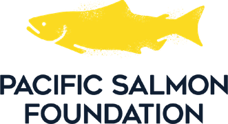
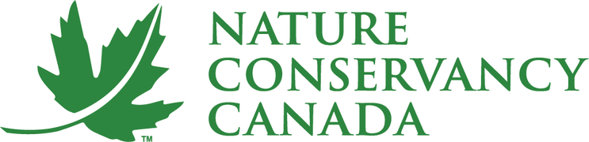
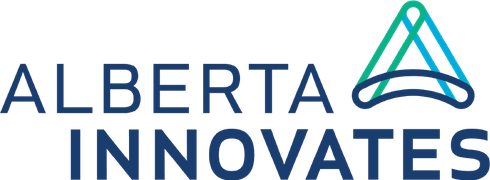
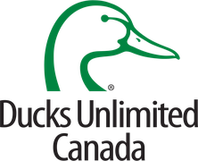
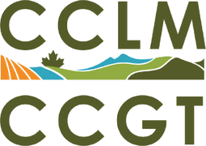
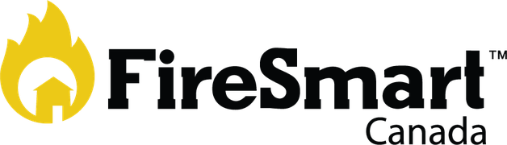
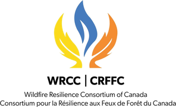
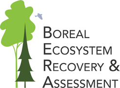
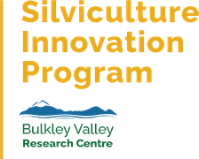
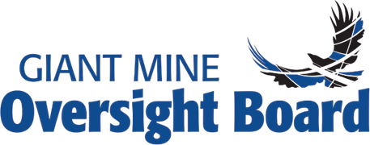
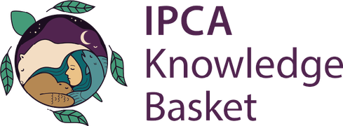
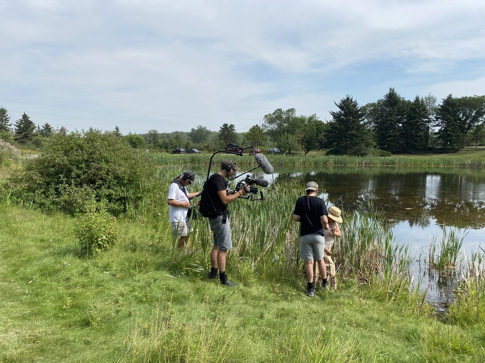
Curieux de nature
Fuse repose sur la conviction que relier la recherche à la pratique est à la fois possible et nécessaire. Nous travaillons entre ceux qui produisent le savoir et ceux qui l'utilisent, et nous commençons par comprendre nos clients et leurs objectifs.
Lire notre histoire →Où votre science doit-elle aller ensuite ?
Faisons de votre science des décisions.